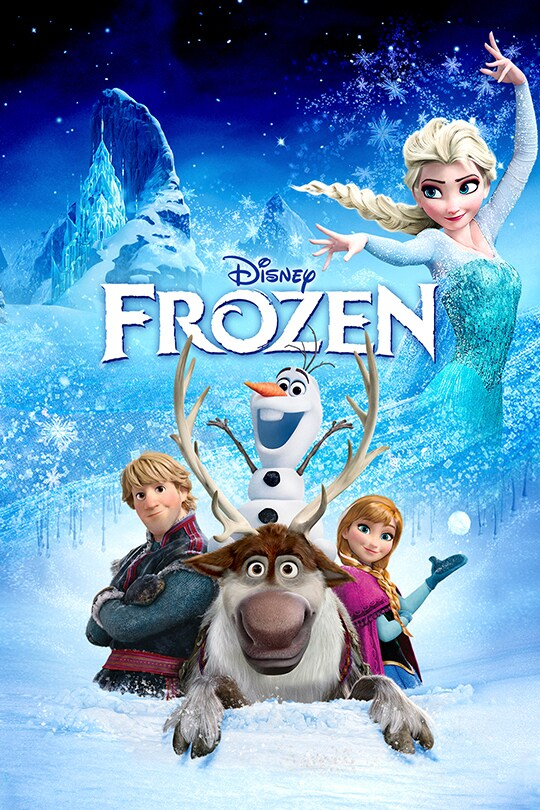

Phim hoạt hình có thể nói là tuổi thơ của biết bao thế hệ chúng ta, chúng trong sáng, hồn nhiên và vui nhộn. Dưới đây sẽ là những thể loại phim hoạt hình mà bạn có thể không biết.
Đây là bộ phim thứ 32 của hãng sản xuất phim nổi tiếng Disney. Bộ phim xoay quanh câu chuyện về xã hội loài vật nhưng có tính cách và suy nghĩ giống con người, luôn xuất hiện với nhiều tình huống vừa kịch tính lại vừa hài hước. Nhân vật chính của bộ phim là vua sư tử Simba với nhiều sóng gió cuộc đời và quyết tâm giành lại vương miện của mình từ tay kẻ xấu. The Lion King hoàn toàn được tạo nên bởi công nghệ CGI với những hình ảnh và kĩ xảo vô cùng, vô cùng đẹp mắt và ấn tượng. Đây thật sự là một kiệt tác thị giác, đưa người xem đến với thế giới hoang dã không thể chân thực hơn, nơi mà từng ngọn cỏ, từng giọt nước, từng sợi lông, đều được chăm chút tỉ mỉ đến từng chi tiết. Xuyên suốt thời lượng phim là một bữa tiệc về muôn loài. Từ những hình ảnh bình dị như khi chúng dạo chơi cùng nhau, đến những cuộc chiến khốc liệt với biển lửa bao quanh, tất cả đều chân thật bởi sự chăm chút tỉ mỉ và những kĩ xảo tuyệt vời.Sau 25 năm, những nội dung từ nguyên tác hoạt hình vẫn được giữ nguyên vẹn. Vậy nên, người xem đã phần nào đoán được hết cốt truyện và những diễn biến chính trong phần phim. Dẫu vậy, cảm giác mà Lion King phiên bản chuyển thể mang lại cho khán giả lại là một trải nghiệm hoàn toàn mới, những cung bậc cảm xúc đều được đẩy lên cao hơn.

Đây là tác phẩm đến từ những người sáng tạo ra bộ phim Tangled và là bộ phim hoạt hình thứ 53 của hãng Walt Disney. Frozen chuyển thể từ câu chuyện cổ tích Bà Chúa Tuyết (The Snow Queen) của nhà văn Đan Mạch, Hans Christian Andersen Phim cũng đề cập đến việc đối mặt và vượt qua nỗi sợ hãi, cũng như ý nghĩa của việc mở lòng với người khác. Elsa từ một nhân vật bị hiểu lầm và cô đơn đã trở thành người bảo vệ của Khu rừng thần tiên, cho thấy hành trình tìm kiếm và thấu hiểu bản thân. Cuối cùng, "Nữ hoàng băng giá" không chỉ là câu chuyện về một cuộc phiêu lưu kỳ thú mà còn là bài học về tình yêu, sự tử tế và lòng can đảm. Những giá trị này được thể hiện qua từng nhân vật, mỗi bước đi của họ và quyết định của họ mang lại ảnh hưởng lớn đến thế giới xung quanh.
>The Incredibles là bộ phim kể về cuộc sống, sinh hoạt thường ngày sau khi giải nghệ của một gia đình siêu nhân gồm 5 thành viên. Tuy nhiên, sự tái xuất của người cha trong phim đã vô ý đẩy gia đình vào nguy hiểm. Lúc này tinh thần đoàn kết lên ngôi, họ phải cùng nhau đánh bại kẻ ác để bảo vệ cuộc sống bình yên vốn có cho người dân. Về khía cạnh giải trí, Incredibles 2 đảm bảo hai yếu tố: hành động mãn nhãn và hài hước vui vẻ. Đặc biệt nhân vật đứa trẻ sơ sinh Jack-Jack có khuôn mặt sinh động, biểu cảm ngây thơ xuất sắc và khả năng siêu nhiên tuyệt vời khiến khán giả thích thú và kinh ngạc. Cậu bé út là điểm sáng nhất của phim, giúp cho câu chuyện về một người cha lần đầu tiên cố gắng vật lộn với ba đứa con trở nên dễ thương, hấp dẫn và gần gũi. Cuối cùng, "Nữ hoàng băng giá" không chỉ là câu chuyện về một cuộc phiêu lưu kỳ thú mà còn là bài học về tình yêu, sự tử tế và lòng can đảm. Những giá trị này được thể hiện qua từng nhân vật, mỗi bước đi của họ và quyết định của họ mang lại ảnh hưởng lớn đến thế giới xung quanh.
Doraemon là một series manga của Nhật Bản do tác giả Fujiko F. Fujio. Nội dung series kể về cuộc đời của cậu bé Nobita và chú mèo máy Doraemon từ tương lai đến để giúp cuộc sống của cậu bé trở nên tốt hơn. Tác phẩm ba lần được chuyển thể thành anime-1 loại hoạt hình đặc trưng của nhật bản

Dragon Ball loạt phim mô tả cuộc hành trình của Son Goku từ lúc bé đến trưởng thành, qua các lần tầm sư học võ và khám phá thế giới để truy tìm các viên ngọc rồng với điều ước từ rồng thiêng. Xuyên suốt hành trình của Son Goku, cậu đã gặp được nhiều bạn bè và chống lại những kẻ hung ác có âm mưu dùng điều ước từ rồng thiêng để làm bá chủ thế giới.
One Piece kể về Monkey D. Luffy, một chàng trai trẻ tuổi, được thần tượng thời thơ ấu của mình là truyền cảm hứng trở thành một hải tặc, bắt đầu cuộc hành trình tại East Blue tìm kiếm kho báu danh giá và trở thành Vua Hải Tặc.
Adventure Time là câu chuyện xoay quanh cậu bé Finn và người bạn thân thiết, Jake, một chú chó có khả năng biến hình và thay đổi kích thước cơ thể. Cả hai sống tại vùng đất Ooo, một thế giới kỳ diệu được hình thành sau cuộc đại chiến hủy diệt Trái Đất. Họ cùng nhau phiêu lưu, chiến đấu chống lại các thế lực xấu xa như Vua Băng và đối mặt với các mối đe dọa siêu nhiên. Bộ phim cũng khai thác sâu sắc hành trình trưởng thành của Finn và những bài học về tình bạn, lòng dũng cảm, và cách đối mặt với khó khăn. - Đặc điểm: - Phong cách hoạt hình độc đáo, màu sắc sống động và chi tiết. - Nội dung đa tầng nghĩa, phù hợp cả với trẻ em lẫn người lớn. - Thể loại: Phiêu lưu, giả tưởng, hài hước. - Điểm đặc biệt: - Thế giới Ooo được xây dựng phong phú, từ những vương quốc như Kẹo Ngọt, Lửa đến vùng đất ma quái. - Nhân vật phong phú, mỗi nhân vật đều có một câu chuyện riêng, từ Công chúa Bóng Ma, Marceline, đến Vua Băng. - Kết hợp hoàn hảo giữa yếu tố phiêu lưu kỳ ảo và những câu chuyện cảm động, sâu sắc

Teen Titans là câu chuyện về nhóm siêu anh hùng tuổi teen gồm Robin (thủ lĩnh), Starfire (công chúa ngoài hành tinh), Raven (phù thủy mạnh mẽ), Beast Boy (người có khả năng biến hình), và Cyborg (siêu chiến binh nửa người nửa máy). Họ cùng nhau chiến đấu chống lại kẻ thù như Slade, Brother Blood và tổ chức Brotherhood of Evil để bảo vệ thế giới. Ngoài những pha hành động gay cấn, phim còn khai thác sâu mối quan hệ giữa các thành viên và câu chuyện cá nhân của từng nhân vật. - Đặc điểm: - Nhân vật đa dạng, mỗi người có tính cách và khả năng riêng biệt. - Kết hợp giữa hành động, cảm xúc và các yếu tố hài hước. - Thể loại: Hành động, siêu anh hùng, phiêu lưu. - Điểm đặc biệt: - Tạo chiều sâu tâm lý cho nhân vật, đặc biệt là câu chuyện cá nhân của Raven và Robin. - Những trận chiến đầy kịch tính và sự hy sinh vì đồng đội.
Bộ phim kể về cuộc sống thường ngày của Gumball Watterson, một chú mèo xanh tinh nghịch, và em trai nuôi Darwin, một chú cá vàng biết đi. Họ sống cùng gia đình trong thị trấn Elmore, nơi đầy rẫy các nhân vật kỳ quặc như quả bóng bay, bánh mì, và khủng long. Các tập phim thường tập trung vào những rắc rối mà Gumball và Darwin gây ra hoặc gặp phải, từ đó rút ra các bài học về tình bạn, gia đình, và cách vượt qua những thử thách trong cuộc sống. - Đặc điểm: - Kết hợp giữa nhiều phong cách hoạt hình (2D, 3D, cắt dán). - Câu chuyện hài hước, đôi khi có chút phi logic nhưng mang tính giải trí cao. - Thể loại: Hài hước, gia đình, phiêu lưu. - Điểm đặc biệt: - Tinh tế trong việc lồng ghép các tình huống đời thường với yếu tố hài hước phi lý. - Tập trung xây dựng sự gắn kết giữa các thành viên trong gia đình Watterson. - Phong cách đồ họa sáng tạo, đa dạng và độc đáo.n cá nhân của Raven và Robin. - Những trận chiến đầy kịch tính và sự hy sinh vì đồng đội.